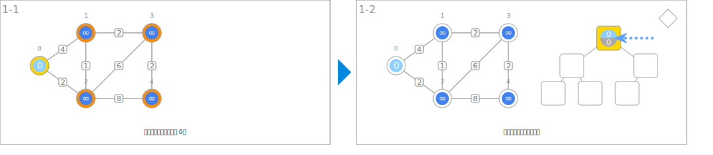

シンボル
| データ | ||
|---|---|---|
 | 從起點到各節點的暫定最短距離 | dist |
| 節點編號 | nodeId | |
 | 最短路徑樹中的父節點 | parent |
 | 節點間的距離 | weight |
| 決定起點 | ||
|---|---|---|
 | 將起點的距離初始化為 0。 | dist[s] ← 0 |
 | 將其餘節點的距離初始化為極大的值。 | dist[v] ← INF |
| 建立最短路徑樹 | ||
 | 指向從堆積中取出的最佳節點。 | u |
 | 拜訪相鄰節點並更新距離。 | if dist[e.v] > dist[u] + e.weight: dist[e.v] ← dist[u] + e.weight 在 que 中插入 (dist[e.v], e.v) parent[e.v] ← u |
 | 標示最短路徑樹暫定要使用的邊。 | (v, parent[v]) |
 | 擴大最短路徑樹。 | 已在 T 內的節點 |
| 輸出最短路徑樹 | ||
 | 利用父節點的資訊建立最短路徑樹。 | |
アニメーション
決定起點

建立最短路徑樹

輸出最短路徑樹